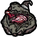
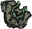
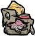
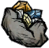
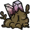
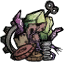
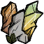
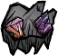

宝石学与装备附魔
常用称呼 Gemology、晶洞、宝石学锻造台、鉴定
逐种查 14 种附魔宝石的晶洞来源、地形、交易升级和三档附魔效果。
晶洞掉落#
把晶洞放在地上，用镐敲开。每个晶洞抽三次普通材料、一次宝石池，并有 5% 概率额外抽一次宝石池。抽到附魔宝石后再判定品质，一级 95%、二级 4%、三级 1%。
锻造台操作#
第一槽放装备，第二槽放宝石。装备与宝石相容时才能附魔。成功会消耗宝石，新附魔耐久设满。重复同种附魔会替换同种，槽满时新增不同种会移除旧附魔。普通附魔组件默认一个槽，具体装备可以有特例。
配置的作用#
宝石学和世界生成总开关默认开启，共同控制新洞穴的宝石学地形与资源。既有地图不会因打开这两个开关而补生成相应房间。已有装备与附魔还涉及单独载入的运行代码。
鉴定工具#
宝石放大镜有 100 点鉴定耐久，远古宝石放大镜和宝石熔岩镜各有 400 点。可以鉴定整叠宝石，每枚消耗 1 点耐久。耐久不足时，只会鉴定能够负担的数量。
宝石升级与交易速查#
以下概率按单颗宝石结算，适用于各颜色的两种附魔宝石。三级已经封顶，交出去有风险。红色交蜗龙只有 25% 留在三级，绿色交龟类只有 40% 留在三级。蚁狮和石虾都不会返还三级，雪怪吃下三级蓝色只掉普通蓝宝石。
在窄屏可横滑查看其余列。
| 宝石颜色 | 交易对象 | 一级升二级 | 二级升三级 | 其余回报与注意事项 |
|---|---|---|---|---|
| 红色 | 25% | 25% | 一级：55% 退回同级，20% 得 3–5 个爆燃黏液。二级：45% 退回同级，20% 得普通红宝石，10% 得 5–9 个爆燃黏液。交易后对玩家中立，喂蓝色会激怒它。 | |
| 绿色 | 25% | 25% | 一级：55% 退回同级，20% 得 3–5 个蛞蝓龟黏液。二级：45% 退回同级，5% 得普通绿宝石，25% 得 5–9 个黏液。交易后跳过偷食行为，喂红色会激怒它。 | |
| 橙色 | 45% | 25% | 一级失败得小玩具（15%）或沙之石（40%）。二级可能退回同级（45%），或给普通橙宝石（5%）、小玩具（10%）、沙之石（15%）。红色、蓝色会触发战斗。 | |
| 白色 | 20% | 25% | 一级另有 50% 退回同级、30% 走雇佣分支。二级另有 50% 退回同级、25% 走雇佣分支。它已在攻击投喂者时，雇佣分支先解除仇恨。 | |
| 蓝色 |
| 25%／颗 | 25%／颗 | 一级另有 65% 退回同级、10% 得 1–2 个冰。二级另有 60% 退回同级、5% 得普通蓝宝石、10% 得 1–2 个冰。一只最多记 10 颗，多喂增加结算次数，每颗独立判定。 |
| 黄色、紫色 | 20% | 15% | 一级失败得小玩具（30%）或沙之石（50%）。二级另有 40% 退回同级、5% 得对应普通宝石、10% 得小玩具、30% 得沙之石。 | |
| 黄色、紫色的备选 | 10% | 无 | 一级另有 45% 退回同级并给 1 个黏液、45% 给 3–5 个黏液。二级最多拿回同级。石虾也收其他颜色，一级升二级 10%，二级无法升三级。 |
三级附魔效果#
汉化中的「碎裂的」「微瑕的」「无暇的」分别对应一级、二级、三级。表中同时列出装备附魔和角色组件触发的效果，涉及移速、工作、战斗、理智和拾取。装备自身还须支持附魔。
在窄屏可横滑查看其余列。
| 附魔宝石 | 一级 | 二级 | 三级 | 适用条件 |
|---|---|---|---|---|
| 击杀回血与理智，各为目标最大生命的 1%。 | 各回复 2%。命中符合条件的生物时，有 25% 概率附加 10% 武器伤害并回复饥饿。 | 各回复 3%。追加伤害提高到 20%，触发率仍为 25%。 | 武器。追加攻击限带动物、猪人、怪物或小生物标签的目标，饥饿回复为该次额外伤害计算值的一半。 | |
| 符合条件的目标额外受 8 点伤害。 | 额外 17 点。目标已着火时再加 5% 伤害，并延长燃烧。 | 额外 34 点。目标已着火时再加 20% 伤害，并延长燃烧。 | 武器。加伤要求目标具备传播组件且可受火焰伤害。命中有火焰特效，也能穿透冰盾。 | |
| 近战动作 ×1.1，工具效率 ×1.25。 | 近战动作 ×1.2，工具效率 ×1.50，30% 概率尝试派出暗影分身。 | 近战动作 ×1.4，工具效率 ×1.75，60% 概率尝试派出暗影分身。 | 武器或工具。加速近战动作要求未骑乘，效率对应砍、挖、采矿和敲击。分身找原目标 24 距离内的另一同类目标。原目标有战斗组件且距使用者超过 50 时会扣 5 理智。 | |
| 随机获得最多 3 种一级附魔。 | 随机获得最多 3 种二级附魔。 | 随机获得最多 3 种三级附魔。 | 每天黎明重抽。最多尝试 10 次，跳过不相容或已有的效果，实际可能不足三种。 | |
| 抵消 25% 的移速减益。每种建筑使工作动作快约 0.67%，上限 20%。 | 抵消 50% 的移速减益。每种建筑使工作动作和武器伤害提高约 1.33%，上限 40%。 | 抵消全部移速减益，使低于 ×1 的倍率回到 ×1。每种建筑使工作动作和武器伤害提高 2%，上限 60%。 | 移速效果限手持该装备，且原移速倍率低于 ×1。工作加速限未骑乘时的指定动作。按 48 距离内不同建筑 prefab 计数，最多 30 种。 | |
| 按主物品栏计数增加理智回复，倍率 ×1。 | 理智倍率 ×2。兼容收割工具的产物，以及符合条件的开采和击杀掉落，会直接送入物品栏。 | 理智倍率 ×3，保留二级的掉落入栏。 | 按主物品栏槽位表的长度计算。基础每格每分钟 +0.2 理智，已有非零理智光环时改为 +0.4，再乘品质。开采与击杀走标记目标后的掉落钩子。 | |
| 已有伤害增益时，攻击倍率再乘 ×1.1。 | 已有伤害增益时，攻击倍率再乘 ×1.2。无制作配方或只有拆解配方的武器额外 +17 伤害。 | 已有伤害增益时，攻击倍率再乘 ×1.3。同条件下额外 +34 伤害。 | 倍率加成要求代码预估的伤害倍率大于 ×1。固定加伤按武器 prefab 查询配方。 | |
| 最大使用次数与腐烂时长 ×2。 | 上限 ×3。符合条件时，70% 概率免扣使用次数。 | 上限 ×4。符合条件时，40% 概率免扣使用次数。 | 免扣限有使用次数且无常规可学习配方的物品。燃料型装备的上限保持原值，附魔时按「当前燃料百分比 × 燃料上限 ×（1 + 品质）」重新设置燃料百分比，并受原上限限制。 | |
| 夏季隔热 60，命中附加 0.15 冰冻值。 | 隔热 120，冰冻值 0.30。击破冻结时生成 75 生命值的冰盾。 | 隔热 180，冰冻值 0.45。击破冻结时生成 100 生命值的冰盾。 | 覆盖装备原有隔热值。冰盾额外提供 60 夏季隔热，承接非持续伤害。转给冰盾的火焰伤害 ×10，并使佩戴者变潮湿。 | |
| 原使用上限或燃料上限 ×4 换算为腐烂时长。本来会腐烂的物品按原剩余时长 ×2 计算。 | 对应倍率 ×8／×6。 | 对应倍率 ×12／×12。 | 耐久改为随时间腐烂，最后变成腐烂食物。新时长还要按原剩余百分比调整。洒水壶可以重新注水。启用冰箱调整时，附魔物可放进冰箱。 | |
| 每分钟 +1 理智，满附魔耐久可装备 8 天。无移速加成。 | 每分钟 +2 理智，可装备 12 天。满足条件时，移速倍率额外 +0.2。 | 每分钟 +4 理智，可装备 16 天。满足条件时，移速倍率额外 +0.3。 | 手持该装备且原移速倍率已高于 ×1 才加速。例如原倍率 ×1.2，二级变为 ×1.4，三级变为 ×1.5。计时耐久仅在装备时消耗。 | |
| 命中 +5 电击伤害，无连锁。 | 命中 +10 电击伤害，并连锁 4 距离内的其他合格目标，倍率 0.1–1.25。 | 命中 +15 电击伤害，连锁倍率 0.25–1.5。 | 武器。对仍存活的目标触发电击，能否进入硬直取决于目标。额外电击伤害对潮湿目标 ×1.5。连锁倍率取决于距离，单个目标有 3 秒连锁冷却。 | |
| 受击后获得 15% 减伤，持续 5 秒。 | 受击后获得 20% 减伤，持续 6 秒。伤害计算阶段数值低于 50 时，增加 50%。 | 受击后获得 25% 减伤，持续 7 秒。同样的低伤害条件下增加 75%。 | 减伤限手持装备，受击后才施加或刷新，并消耗附魔耐久。火腿棒在更新新鲜度伤害时判断是否低于 50。 | |
| 死亡掉落时把附魔装备送回附近亡者物品栏，满耐久可触发 1 次。 | 手持时抵消 25% 的理智扣减。死亡时另尝试拾回 2 件附近物品，可触发 4 次。 | 手持时抵消 50% 的理智扣减。死亡时另尝试拾回 3 件附近物品，可触发 8 次。 | 减免作用于理智组件收到的负值变化。死亡效果先在掉落处 10 距离内查找玩家，再判断是否已死亡或为鬼魂。拾回范围以该玩家为中心，半径 8。 |
按宝石查获取地形#
同色的两种宝石，能掉落它们的晶洞也可能不同。表中百分比是每次从该晶洞的宝石池抽取时，命中指定宝石的概率，已计入普通宝石等候选掉落。点击晶洞名可查看对应的地形和采集方法。
| 附魔宝石 | 可掉落的晶洞与地形 |
|---|---|
| |
| |
| |
| |
| |
| |
| |
| |
| |
| |
| |
| |
| |
|
按晶洞查采集方法#
先从下表的地形取得晶洞，再放到地上用镐敲开。石化蘑菇树与几类矿物都有外观相近的无晶洞版本。
在窄屏可横滑查看其余列。
| 晶洞 | 常见地形 | 怎么拿到晶洞 |
|---|---|---|
 红色菌类晶洞 | 红蘑菇林、混合菌类区域 | 用镐挖有晶体的红色石化蘑菇树。必掉 1 个，另有 10% 概率再掉 1 个。 |
 绿色菌类晶洞 | 绿蘑菇林、混合菌类区域 | 用镐挖有晶体的绿色石化蘑菇树。必掉 1 个，另有 10% 概率再掉 1 个。 |
| 蓝蘑菇林、混合菌类区域 | 用镐挖有晶体的蓝色石化蘑菇树。必掉 1 个，另有 10% 概率再掉 1 个。 | |
 粪便晶洞 | 蝙蝠洞 | 用镐挖带晶洞的粪化石矿簇。按初始高度，矮、中、高分别有 10%、50%、100% 概率掉落，高矿簇还可能放出蝙蝠。 |
 胚胎晶洞石虾习性 | 岩石平原、石虾孵化区 | 用镐挖孕育中的岩石。必掉 1 个，另有 10% 概率再掉 1 个。采矿会惊动附近的石虾。 |
| 地下月亮洞窟 | 找月玻璃钟乳石。地震开始后，未掉过晶洞或已经重新长满的钟乳石有 25% 概率在 4–10 秒后掉落 1 个，避开落点。 | |
 黏液晶洞 | 遗迹入口苔藓区、洞穴猴区 | 用镐挖带晶洞的滑石灰岩。附近的洞穴猴可能被激怒。 |
 垃圾晶洞 | 远古遗迹 | 用锤子拆损坏的发条装置。三种残骸各有 30% 概率掉 1 个。 |
 苔藓晶洞 | 洞穴入口落水洞、兔人聚落、部分绿蘑菇林 | 用镐挖带晶洞的「不起眼的洞穴」。挖开可能跑出住在里面的生物。 |
 浮石晶洞地热螨打法 | 洞穴的喷气孔区域 | 击杀身上带晶洞的地热螨，必掉 1 个。地热螨生成时有 50% 概率变成这种外观。 |
| 熔岩洞穴的活动熔岩区 | 用镐挖已经结晶的熔火巨岩，必掉 1 个。冒火的巨石还要等 1 个游戏日结晶。熔火巨岩和熔火晶洞沿用当前社区汉化名称。 |
巨石枝与旧档#
斧砍长成的巨石枝时，藤上掉落按种植位置所属地形的池子抽取。三色蘑菇林、混合菌类区、月亮洞窟、苔藓区、岩石平原、蝙蝠洞、遗迹、喷气孔区和落水洞的池子均能提供对应晶洞。旧树沿用已经保存的掉落，在现有对应地形重新种植可以抽当前池。开启宝石学和蘑菇树调整时，绿树入夏、红树入秋、蓝树入春也有机会自然石化。秋天已有的石虾附近还可能生成孕育中的岩石。
虫茧的高品质宝石#
到地表连帽森林的黑寡妇巢旁，用寡妇之爪破开茧。蛞蝓龟或蜗牛龟型、雪怪型、蜗龙型、石虾型的茧各随机给一颗绿、蓝、红、白色附魔宝石，同色两种都可能出现。每颗有 90% 概率为二级、10% 为三级。遗迹迷宫和远古守护者的箱子还可能提供已经附魔的装备。
岛屿冒险的额外来源#
海难的熔岩地与火山中，开采普通或含金熔岩矿时，14 种附魔宝石都以相同的低权重加入额外掉落池。黑曜石岩石和龙骑士蛋各有 10% 概率给熔火晶洞，木炭岩有 10% 概率给浮石晶洞。启用岛屿冒险的老虎机战利品时，部分老虎机奖池还会给晶洞。
版本与核对来源
测试版 v6.0.3.9 · 汉化 20261106
- 测试版 ·
modinfo.lua:184 - 测试版 ·
scripts/prefabs/um_gemology_geodes.lua:17 - 测试版 ·
scripts/prefabs/um_gemologyforge.lua:25 - 测试版 ·
scripts/components/gem_enchantable.lua:25 - 测试版 ·
init/init_gamemodes/init_uncompromising_mode.lua:92 - 测试版 ·
scripts/prefabs/um_magnifier.lua:55 - 测试版 ·
scripts/components/gemologyscanner.lua:13 - 测试版 ·
init/init_gemology/trades.lua:87 - 测试版 ·
init/init_gemology/trades.lua:247 - 测试版 ·
init/init_gemology/trades.lua:261 - 测试版 ·
init/init_gemology/trades.lua:411 - 测试版 ·
init/init_gemology/trades.lua:493 - 测试版 ·
scripts/prefabs/snowmong.lua:123 - 测试版 ·
scripts/stategraphs/SGsnowmong.lua:329 - 测试版 ·
scripts/gemology_defs.lua:90 - 测试版 ·
scripts/gemology_defs.lua:228 - 测试版 ·
scripts/gemology_defs.lua:301 - 测试版 ·
scripts/gemology_defs.lua:353 - 测试版 ·
scripts/gemology_defs.lua:421 - 测试版 ·
scripts/gemology_defs.lua:450 - 测试版 ·
scripts/gemology_defs.lua:472 - 测试版 ·
scripts/gemology_defs.lua:581 - 测试版 ·
scripts/gemology_defs.lua:648 - 测试版 ·
scripts/gemology_defs.lua:689 - 测试版 ·
scripts/gemology_defs.lua:742 - 测试版 ·
scripts/gemology_defs.lua:789 - 测试版 ·
scripts/gemology_defs.lua:842 - 测试版 ·
init/init_tuning.lua:400 - 测试版 ·
init/init_gemology/special.lua:5 - 测试版 ·
postinit/components/freezable.lua:21 - 测试版 ·
scripts/prefabs/um_ice_shield.lua:37 - 汉化补丁 ·
init/init_strings/init_names.lua:757 - 汉化补丁 ·
init/init_strings/init_names.lua:769 - 汉化补丁 ·
init/init_strings/init_names.lua:775 - 汉化补丁 ·
init/init_strings/init_names.lua:826 - 汉化补丁 ·
init/init_strings/init_names.lua:859 - 测试版 ·
init/init_gemology/special.lua:44 - 测试版 ·
init/init_gemology/special.lua:83 - 测试版 ·
init/init_gemology/special.lua:111 - 测试版 ·
init/init_gemology/special.lua:129 - 测试版 ·
init/init_gemology/special.lua:149 - 测试版 ·
init/init_gamemodes/init_uncompromising_mode.lua:93 - 测试版 ·
postinit/components/combat.lua:79 - 测试版 ·
postinit/components/combat.lua:92 - 测试版 ·
postinit/components/combat.lua:121 - 测试版 ·
scripts/prefabs/uncompromising_buffs.lua:6 - 测试版 ·
scripts/prefabs/uncompromising_buffs.lua:451 - 测试版 ·
scripts/prefabs/um_ice_shield.lua:69 - 测试版 ·
scripts/prefabs/um_ice_shield.lua:108 - 测试版 ·
init/init_containers.lua:1000 - 测试版 ·
modinfo.lua:167 - 测试版 ·
modworldgenmain.lua:31 - 测试版 ·
scripts/um_gemology_geode_defs.lua:1 - 测试版 ·
scripts/prefabs/um_gemology_geodes.lua:97 - 测试版 ·
scripts/map/tasks/caves/gemology.lua:3 - 测试版 ·
scripts/map/tasks/caves/gemology.lua:47 - 测试版 ·
scripts/map/tasks/caves/gemology.lua:128 - 测试版 ·
scripts/map/tasks/caves/gemology.lua:141 - 测试版 ·
scripts/map/tasks/caves/gemology.lua:167 - 测试版 ·
scripts/map/rooms/caves/gemology.lua:2 - 测试版 ·
scripts/map/rooms/caves/gemology.lua:55 - 测试版 ·
scripts/map/rooms/caves/gemology.lua:117 - 测试版 ·
scripts/map/rooms/caves/gemology.lua:166 - 测试版 ·
scripts/map/rooms/caves/gemology.lua:198 - 测试版 ·
scripts/map/rooms/caves/gemology.lua:231 - 测试版 ·
scripts/map/rooms/caves/gemology.lua:249 - 测试版 ·
scripts/map/rooms/caves/moonregions.lua:243 - 测试版 ·
scripts/map/rooms/caves/moltenregions.lua:311 - 测试版 ·
scripts/prefabs/um_mushtrees_petri.lua:179 - 测试版 ·
scripts/prefabs/um_guano_rock.lua:17 - 测试版 ·
scripts/prefabs/um_rocklobster_rock.lua:19 - 测试版 ·
scripts/prefabs/um_moonglass_ceiling.lua:50 - 测试版 ·
scripts/prefabs/um_moonglass_ceiling.lua:144 - 测试版 ·
scripts/prefabs/um_slimestone_rock.lua:18 - 测试版 ·
scripts/prefabs/um_sinkmound_rock.lua:34 - 测试版 ·
scripts/prefabs/um_magmastone.lua:19 - 测试版 ·
scripts/prefabs/um_magmastone.lua:59 - 测试版 ·
postinit/prefabs/chessjunk.lua:78 - 测试版 ·
postinit/prefabs/cave_vent_mite.lua:20 - 测试版 ·
init/init_strings/init_names.lua:830 - 汉化补丁 ·
init/init_strings/init_names.lua:848 - 测试版 ·
init/um_tree_rock_data.lua:34 - 测试版 ·
init/um_tree_rock_data.lua:83 - 测试版 ·
init/init_gamemodes/init_uncompromising_mode.lua:256 - 测试版 ·
postinit/prefabs/mushtrees.lua:34 - 测试版 ·
postinit/prefabs/mushtrees.lua:84 - 测试版 ·
postinit/prefabs/rocky.lua:19 - 测试版 ·
scripts/map/tasks/forest/giant_trees.lua:11 - 测试版 ·
scripts/webbedcreatureloot.lua:404 - 测试版 ·
scripts/webbedcreatureloot.lua:515 - 测试版 ·
scripts/webbedcreatureloot.lua:615 - 测试版 ·
scripts/webbedcreatureloot.lua:713 - 测试版 ·
scripts/prefabs/webbedcreature.lua:108 - 测试版 ·
scripts/prefabs/widowsgrasp.lua:22 - 测试版 ·
init/init_gemology/misc.lua:10 - 测试版 ·
init/init_compat.lua:244 - 测试版 ·
init/init_compat.lua:282 - 测试版 ·
init/init_compat.lua:320 - 汉化补丁 ·
init/init_strings/init_names.lua:234 - 汉化补丁 ·
init/init_strings/init_names.lua:304